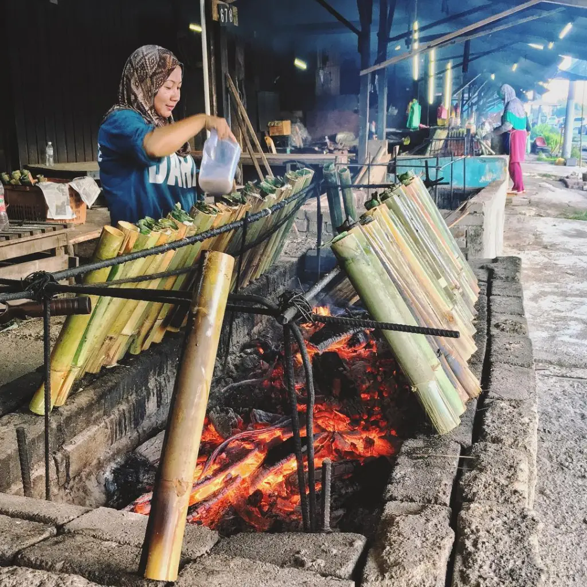

What is 'Lemang'? It is a special local cuisine made of rice and it is steamed inside a bamboo stick. 'Lemang' is popular among the Malays especially during celebrations like Eid season and 'Hari Raya'. To enhance the taste of 'Lemang', you can eat it with yummy gravy or beef serunding (beef floss). So, be sure to spare some time and visit the 'Lemang' Factory in Terengganu and learn the process of making this scrumptious food.